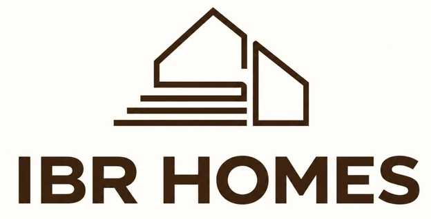
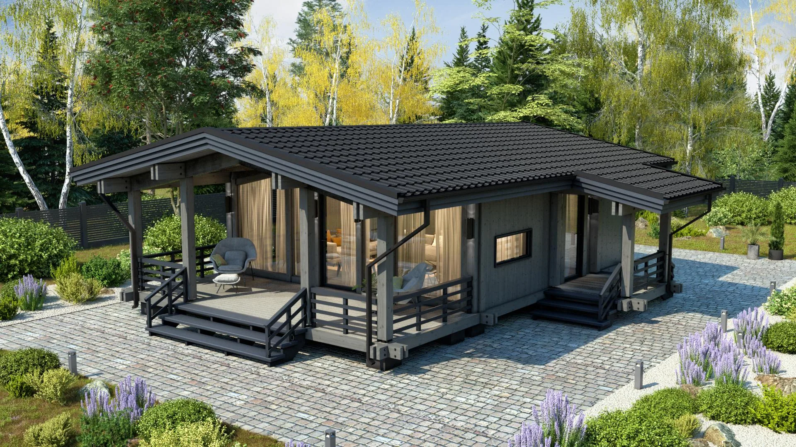
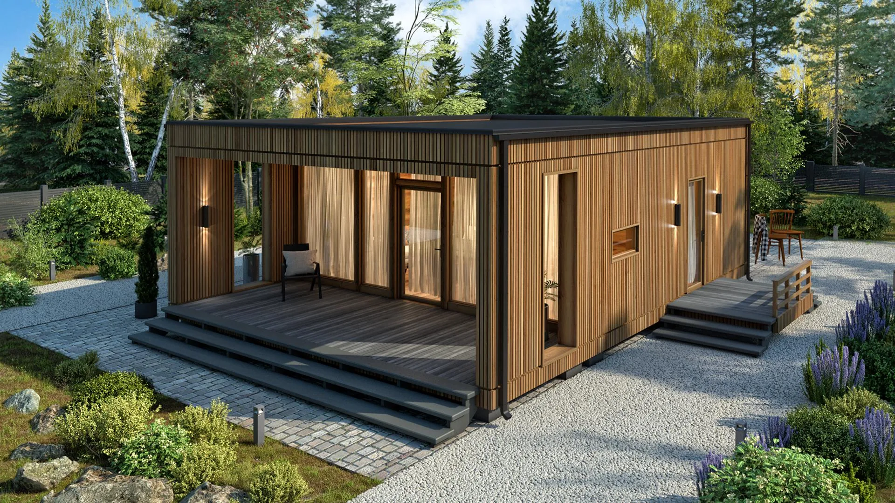
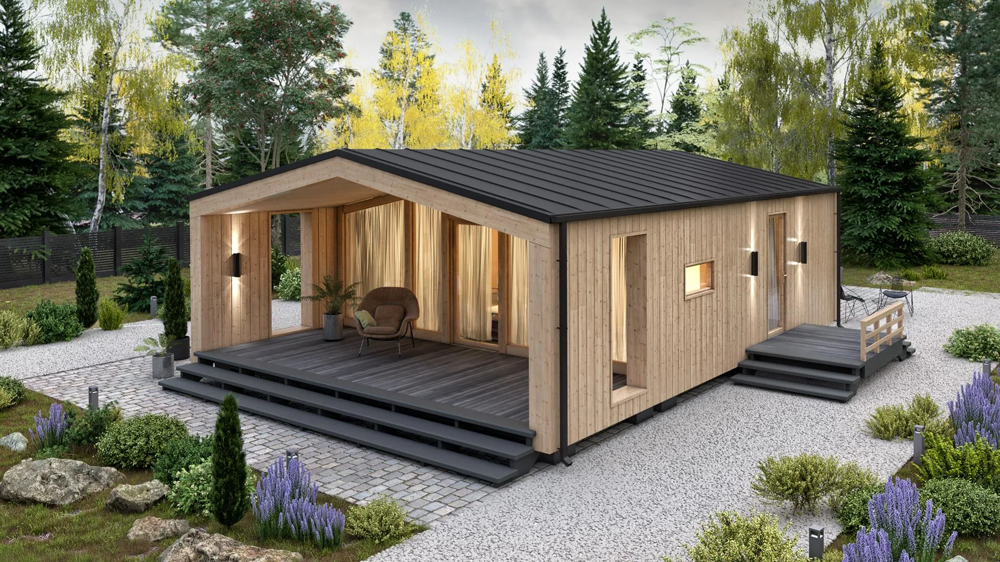
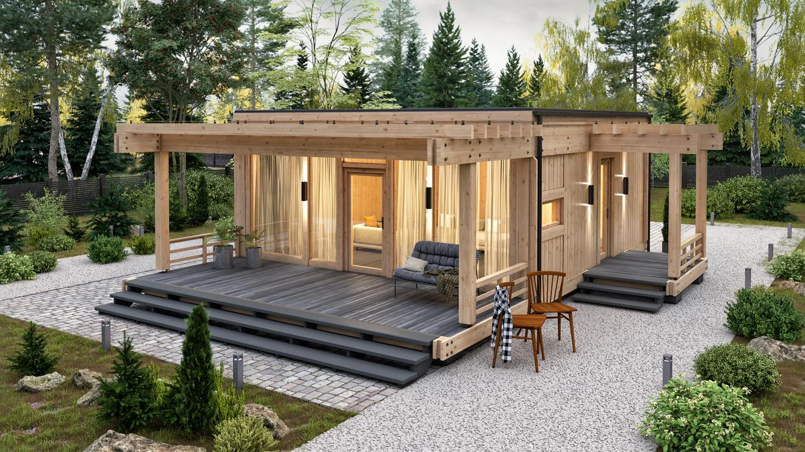
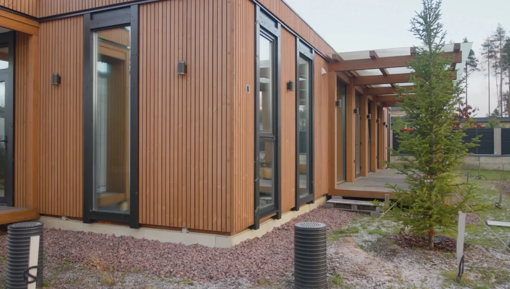
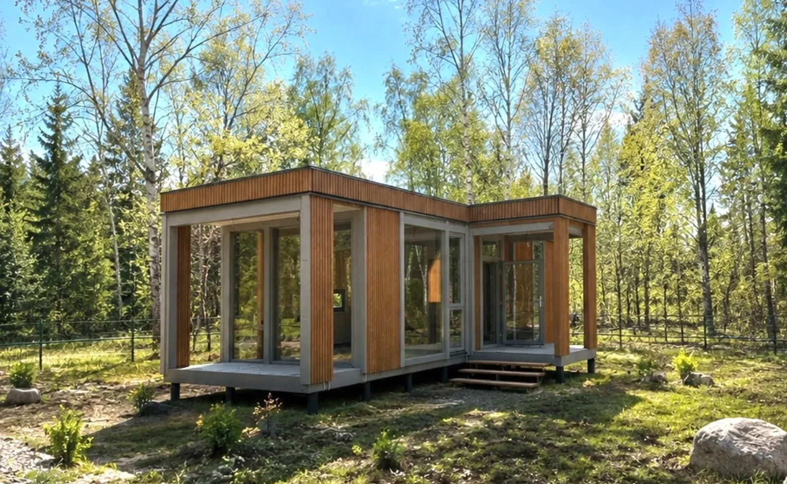
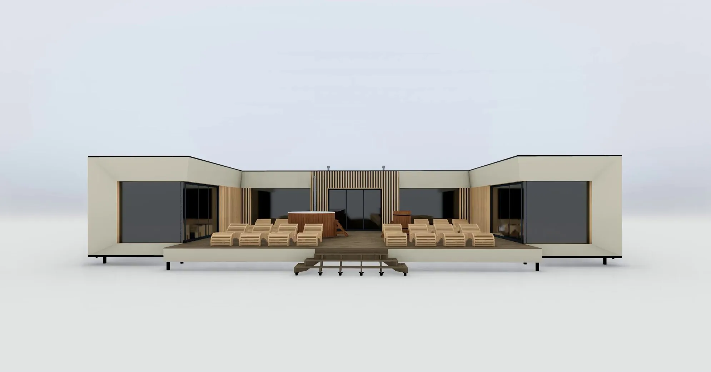

CLT-дома заводской точности
Производим элементы дома на собственном производстве с контролем качества на каждом этапе.
ПРОИЗВОДСТВОЗАВОДСКАЯ
ТОЧНОСТЬ.
ТОЧНОСТЬ.



Создадим дом из CLT
под ключ до 3 месяцев —
от проекта до готового решения.
В строительстве с 2011 года.
Собственное производство. Полный цикл работ.
Производим элементы дома на собственном производстве с контролем качества на каждом этапе.
Проектируем архитектуру и конструкцию с учётом участка, образа жизни и возможностей CLT-технологии.
Основные элементы дома изготавливаются заранее и доставляются на участок готовыми модулями. Монтаж проходит быстро и с минимальным количеством строительных работ на месте.

СТРОИТЕЛЬСТВОПРОДУМАНОБерём на себя весь цикл: проектирование, производство модулей, монтаж и отделку. Вы получаете готовый дом без необходимости управлять множеством подрядчиков.

ГОТОВОЕ РЕШЕНИЕОТ ПРОЕКТА
CLT-панели — современная технология деревянного домостроения. Многослойные панели из древесины становятся основой несущих стен, перекрытий и кровельных конструкций.
Панели производят путём склеивания слоёв деревянных досок под давлением. Волокна соседних слоёв располагаются перпендикулярно друг другу.
Перекрёстное расположение слоёв обеспечивает высокую прочность, жёсткость и стабильность геометрии.
Проектируем, производим и строим. От первого эскиза до готового дома.
Перекрёстная структура позволяет использовать панели в качестве основных конструктивных элементов здания.
Технология снижает усадку и склонность древесины к деформации, помогая сохранять геометрию конструкций.
Панели изготавливаются по проекту на производстве и поступают на объект подготовленными к монтажу.
Заводская обработка обеспечивает соответствие проектным размерам, точность проёмов и соединений.
В зависимости от проекта поверхность панелей может оставаться открытой и использоваться как часть оформления интерьера.
CLT-панели формируют прочную основу дома. В сочетании с рассчитанным под климат утеплением, качественными окнами, вентиляцией и отоплением технология подходит для строительства домов постоянного проживания.
Сначала определяем задачу.
Затем превращаем её в проект.

Изготавливаем CLT-панели и модули домов на собственном производстве.
Разрабатываем планировки с учётом ваших задач, пожеланий и особенностей участка.
Возводим дома под ключ — с отделкой и инженерными системами.
Ответьте на несколько вопросов — подберём планировку и комплектацию под ваши задачи и подготовим предварительный расчёт стоимости строительства из CLT-панелей.
От конструкции к комфорту.
Шесть решений, которые
важно продумать вместе.
Прокручивайте: дом собирается,
преимущества меняются рядом.
Пять форматов для жизни и отдыха.
Площадь, архитектуру и комплектацию подберём под ваши задачи.
Фасады, террасы и панорамное остекление. Рассмотрите фотографии и сохраните идеи для своего проекта.
Деревянные панели с перекрёстным расположением слоёв. Конструкцию, состав стен и характеристики выбранного решения обсудим на этапе проекта.
Да, пожелания можно включить в задание. Возможность конкретных изменений определяется конструкцией и проектом.
Состав фиксируется в предложении. Отдельно обсуждаем основание, доставку, монтаж, отделку и инженерные системы.
Для расчёта нужны параметры дома и участка. В форме можно указать тип проекта, площадь, город и желаемый срок начала строительства. Подтверждённые стоимость и сроки команда сообщит после уточнения задачи.
Можно начать с пожеланий к дому. В заявке выберите «Нет» на вопрос об участке — это поможет понять, с какого этапа начать разговор.
Укажите место строительства и особенности подъезда. Способ доставки, состав монтажных работ и стоимость зависят от проекта и условий участка.
Условия финансирования и возможные варианты оплаты нужно уточнить у команды. На сайте нет утверждённой кредитной программы или обещания рассрочки.
Сайт готовит сообщение с вашими параметрами. Затем открывается WhatsApp, где вы сами нажимаете «Отправить». До этого команда не получает заявку.
Направление вращения
зависит от прокрутки.
